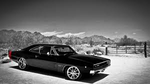

1929 pierce-arrow

The Motor Car Company was an American motor vehicle manufacturer based in Buffalo, New York, active from 1901 to 1938. Although best known for its expensive luxury cars, Pierce-Arrow also manufactured commercial trucks, fire trucks, boats, camp trailers, motorcycles, and bicycles.[2]
Main article: Dodge Charger (1966) § First generation
1966 Charger
The Charger was introduced mid-1966 model year. Derived from the Chrysler B-body intermediate-sized Dodge Coronet, it shared major components like the chassis and much of the two-door Coronet's front body with a fastback roofline following the pattern set by AMC's 1965 Marlin.[9] Similar to the positioning of the Marlin, the Charger was a more substantial car focused on more mature buyers because "Pony cars, the implication ran, were for kids."
The fastback styling was popular with Corvette and Mustang buyers.[10] The Charger's interior featured four bucket seats with a center console that went to the back seats and had "race-inspired" instrument gauges.[10] The front fascia introduced hidden headlights behind a full-width grille and a "wall-to-wall" taillamp design. The base engine was a 318 cu in (5.2 L) V8 with a three-speed manual transmission, while automatic and floor-mounted manual transmissions were optional. Larger and more powerful engines were available up to the 426 cu in (7.0 L) Hemi V8.
Positioned as a sports-type luxury model, sales of the 1966 and 1967 Chargers were low. The cars' front and rear overhang made the fastback design look tall, especially given its relatively narrow track dimensions (the distance between the centerline of two wheels on the same axle).[6] Adapting a pony car-sized fastback roofline to intermediate-sized cars was not attractive "with pundits pointing to the similar fate of AMC's Marlin to support the theory."